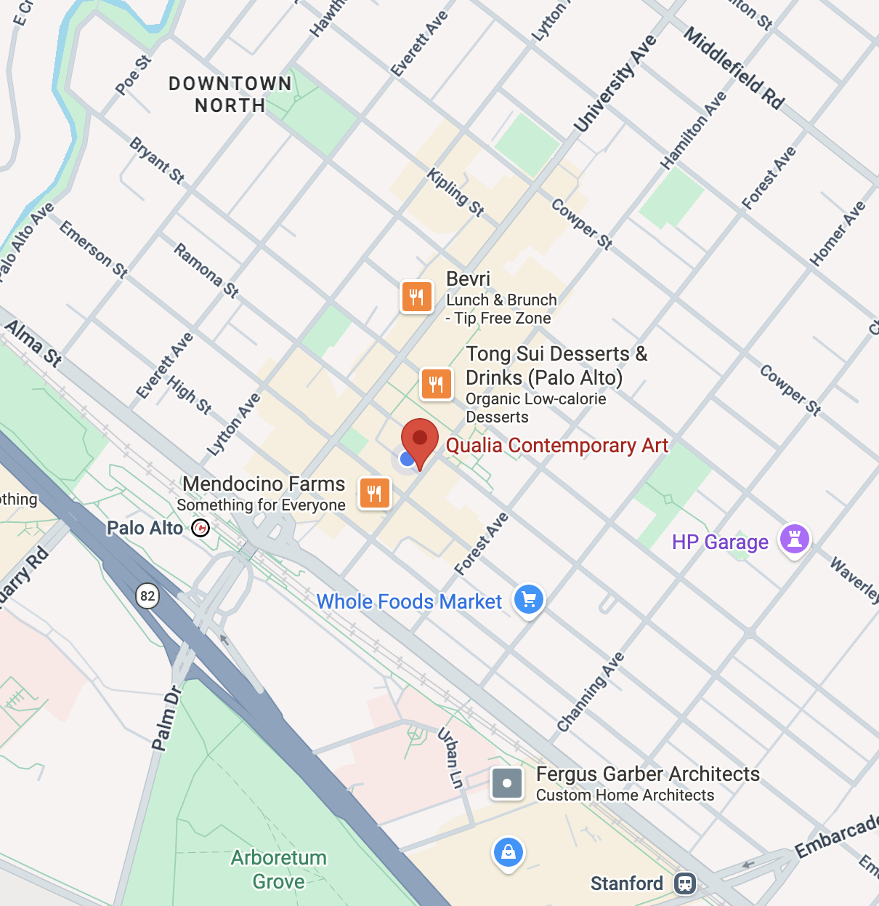
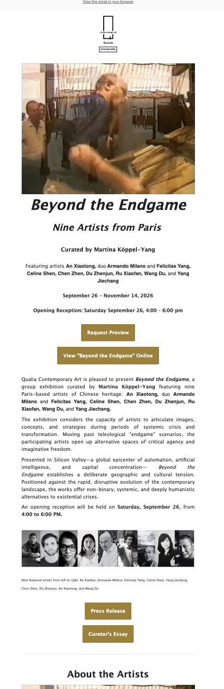
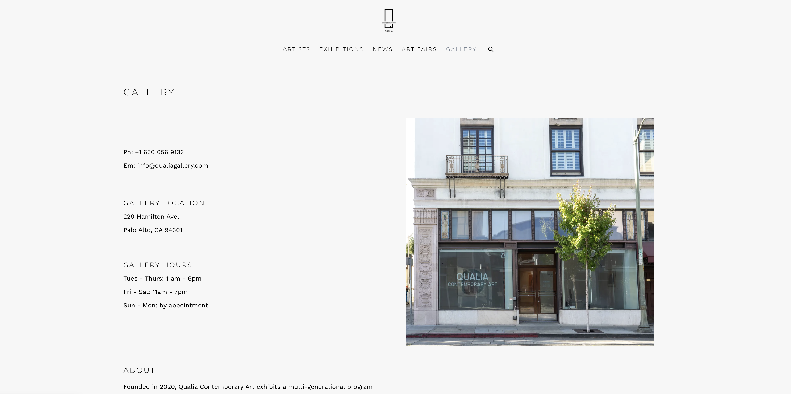
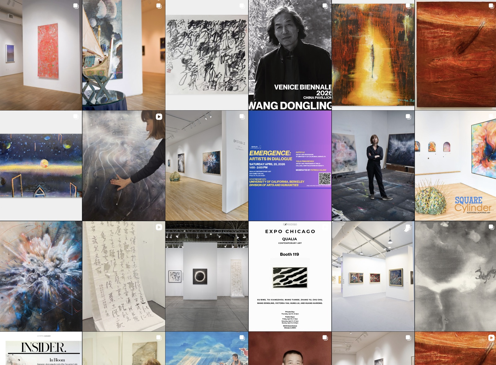
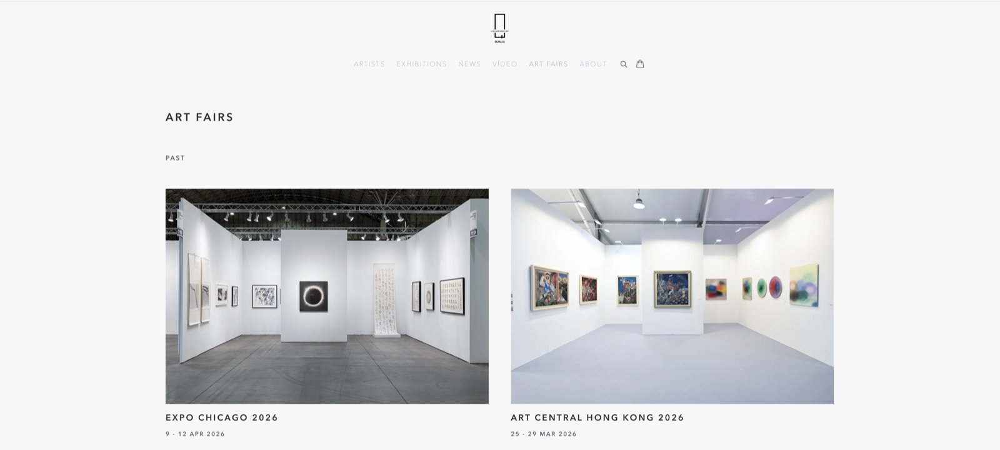

← Work Qualia Contemporary Art
Jan 2026 – Present · Palo Alto, CA
Qualia Contemporary Art
- Brand Narrative
- Digital Growth
- Visual Collateral

+20.4%
Organic reach & community growth in 5 months
End-to-End
Decks, one-pagers, newsletters & short-form video
150+
Attendees driven by digital campaigns to physical gallery events
Role and intent
Elevating gallery communications to an institutional standard. I turned complex, nuanced artist histories into clear, visually compelling stories—converting digital curiosity into foot traffic, collector relationships, and broader regional visibility.

In Focus
Beyond the Endgame — Email Campaign
An exhibition announcement with two jobs: fill the opening reception and start sales conversations with collectors—for a group show of nine Paris-based artists most Bay Area readers had never heard of.
- Goal
- Opening-reception attendance and collector preview requests
- Audience
- Collectors, subscribers, press, and the local arts community
- Context
- An inbox, read top to bottom—often on a phone, often in seconds
- Essentials above the fold Title, curator, dates, and reception time come before any body copy, so a reader who only skims still knows what, when, and where.
- Two calls to action for two readers “Request Preview” is the sales path for collectors; “View Online” is the low-commitment path for everyone else.
- Local relevance, early The curatorial framing of Silicon Valley—automation, AI, concentrated capital—leads the story, connecting a Paris exhibition to what readers here live with every day.
- Faces before biographies A portrait strip of all nine artists turns a list of unfamiliar names into people before the reader reaches the longer artist section.
- Depth on demand The press release and curator’s essay sit lower as secondary links for press and committed readers, keeping the main message short.
- Repeat the ask The reception date and time return at the end of the copy—right where a reader decides whether to go.
Writing for Context
One Exhibition, Five Formats
The same facts—artists, dates, a reason to care—are rewritten for where they will be read. What leads, how long it runs, and what the reader is asked to do all change with the channel and the reader’s state of mind.
| Channel | Reader | What leads | The ask |
|---|---|---|---|
| Email newsletter | Subscribers and collectors who opted in and will read on | Title, dates, and reception first; the curatorial story after | RSVP, request a preview |
| Scrolling, deciding in about a second | One strong image and a short hook; details in the carousel and caption | Save, share, visit | |
| Event listing | Already interested, checking logistics | Date, time, place, speakers, and partner institution | RSVP—one scan of a QR code |
| Print poster | Passing by, reading from a distance | Event name and date set large enough to work as graphics | Remember the date |
| Gallery website | Collectors, press, and researchers looking for the record | An institutional voice, the full artist roster, practical visiting information | Inquire, plan a visit |
Pillar 01
Editorial & Campaign Collateral
Designed modular presentation decks, exhibition catalogs, one-pagers, and campaign graphics with rigorous typography and visual hierarchy—so complex programming and artist narratives read clearly for stakeholders, clients, collectors, and partners.

Built for a glance: event, occasion (International Women’s Day), date and time, then artists. The oversized date doubles as a graphic anchor.

Motion gives readers a reason to stop in an inbox full of static images.

Written to drive RSVPs for a free panel: logistics first, the UC Berkeley partnership for credibility, and a QR code that shortens the path from post to sign-up.

Hours, location, and contact made scannable for first-time visitors, in a calm voice that matches the gallery itself.


Art fair carousel that moves from logistics to story: the booth number first (the one fact a fair visitor needs), then the artist’s biography, then a close detail of the work to reward a swipe.
Pillar 02
Short-Form Artist Narratives
Cut long studio visits into story-driven short-form for YouTube, Instagram, and RedNote—keeping a human rhythm rather than a corporate edit. Used Premiere Pro and transcription-assisted workflows to turn around high-impact clips on exhibition timelines.


Pillar 03
Public Programming & Events
Ran multi-channel promotional campaigns and RSVP flows for live panels and openings—including university collaborations—drawing 150+ visitors and connecting digital audiences to the physical gallery.


Pillar 04
Workflow Systems & Acceleration
Built repeatable workflows to synthesize dense artist research, translate multilingual materials, and repurpose assets across newsletter, social, and web—so the gallery could publish with speed without losing editorial quality.

The feed rotates installation views, artwork details, artist portraits, and event graphics, so it reads as a program rather than a stream of announcements.

The same Expo Chicago content as the social carousel, reset for the website: a neutral archival record instead of a call to visit the booth.
Process & Documentation
Additional photography from studio visits and exhibition installs.


Tools
- Design & Collateral
- Figma · InDesign · Illustrator · Canva · Presentation Systems
- Video & Motion
- Premiere Pro · CapCut · Short-Form Production · Cinematography
- Strategy & Systems
- Mailchimp · Generative AI Workflows · Audience Metrics · Artlogic · Google Workspace